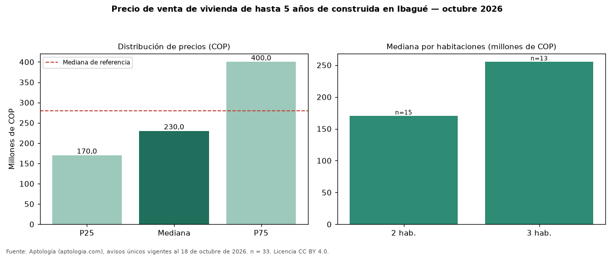

Precio de venta de vivienda de hasta 5 años de construida en Ibagué — octubre 2026
Con 33 avisos únicos, el precio mediano de vivienda de hasta 5 años de construida en venta en Ibagué es COP 230 millones. Eso es 18 % menos que la mediana de toda la oferta de venta en Ibagué (COP 280 millones). Por metro cuadrado, la mediana es COP 3.918.919/m² (+25 % frente a COP 3.125.000/m²), puesto 8 de 11 ciudades comparables. El rango intercuartílico va de COP 170 millones a COP 400 millones (razón 2,4). Por habitaciones: 2 habitaciones, COP 170 millones (n = 15); 3 habitaciones, COP 255 millones (n = 13). El área mediana es 61 m² (referencia: 79 m²). El estrato más frecuente es 2. Datos abiertos CC BY 4.0 de Aptología; fuente y búsqueda de inmuebles: https://www.aptologia.com/venta/ibague. Archivos: PDF de 2 páginas, CSV con las cifras y gráfica PNG.

| Avisos únicos | 33 |
|---|---|
| Percentil 25 | COP 170.000.000 |
| Mediana | COP 230.000.000 |
| Percentil 75 | COP 400.000.000 |
| Mediana por m² | COP 3.918.918 |
Fuente: avisos vigentes de portales inmobiliarios recopilados por Aptología, deduplicados (mínimo 30 avisos únicos por celda). Precios pedidos, no cerrados. Fecha: 2026-10-18.